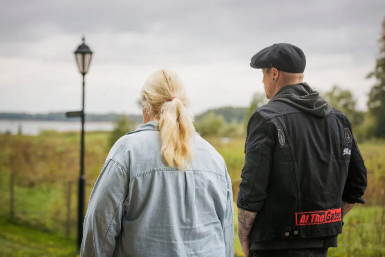
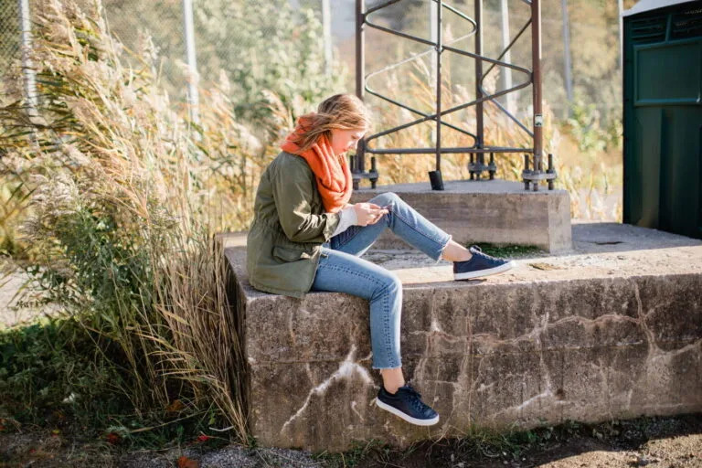
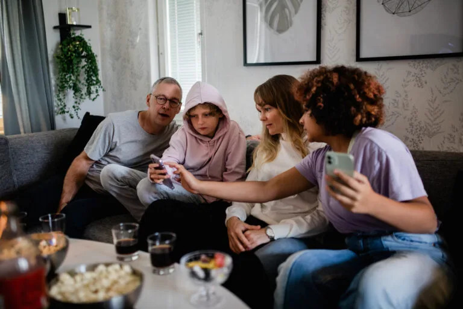
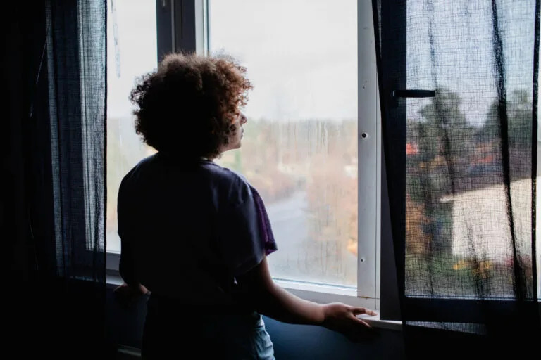
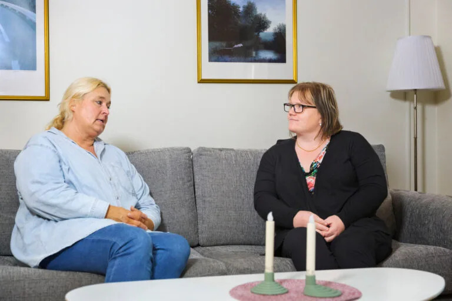
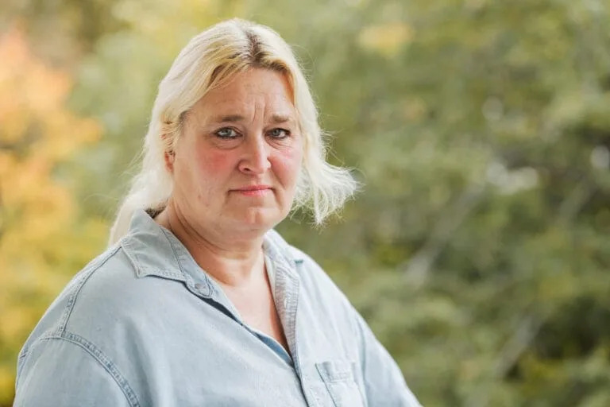

Nytida erbjuder en stor variation av individanpassade verksamheter såsom HVB, skyddat boende och utredning för barn, unga och vuxna.
Utgångspunkten för vårt arbete är varje människas unika förutsättningar och individuella behov. Nytida erbjuder insatser för människor som av olika anledningar behöver stöd, omsorg eller behandling. Vi uppmuntrar och stärker individen att successivt klara vardagliga utmaningar med målet att kunna leva ett självständigt och fungerande liv.
Vi erbjuder omsorg och behandling i sammanhang som kräver stora resurser, djup kunskap och beprövade arbetsmetoder. Du hittar våra verksamheter i hela Sverige, sorterade utifrån de tjänster som vi erbjuder för barn och unga samt vuxna.

Särskilt boende
Akutplacering
Familjhem och jourhem
Skyddat boende
Behandlingshem
Viss annan heldygnsvård